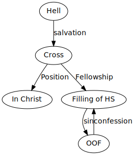
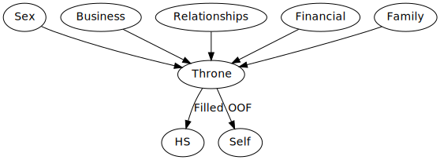

Eph 5:18
We have resident in each of us God’s heart, we have all the resources we need and yet believers live as if they are living on empty.
Have you lost hope that your life (Christian) is not what it is what you want it to be? Do you struggle with the same sin or worthless feeling with no avail?
Yes they may believe God will help them but what does that really mean? We believe
“God helps those who help themselves”
There are little difference between the habits of the believer and the secular man. Guilt is usually the main motivator for obedience and thus is usually short lived. One of the great dangers of the Christian life is that we grow complacent and we lose the passion for Jesus! Our greatest fear is that we become a wicked old man - calloused and unpleasant.
Eph 5:15-16 be:
Eph 5:18 This is a command! Each believer is to be filled with the Spirit. He’s not saying “This would be a great idea if you would just let the HS control you”.
God is not into suggestions but commands.
There is no command to be baptized, sealed, or indwelled by the HS.
You cannot see the HS but you can see the effects of the HS. He is like electricity - He is always there, but you have to tap into Him. Without the Spirit controlling us life can become a hassle.
How often do we look at other believers and say “What a spiritual giant!” why can’t I be like that? When the HS fills a particular believer He manifests His works in a way that is tied closely with that person’s natural gifts and personality/temperament.
 Ministries of HS:
You cannot fill something that is already filled. If you already are filling your life with things that soothe your deep longing the HS cannot fill within you. Sadly Christians too often are trying to fill their life with things that bring no long term solution.
Because of the present tense.
The filling of the HS. Life depletes that ministry in our lives.
Even though it is a continuous action, do not believe that because you are not being filled then He leaves you. “If I’ve done such and such horrible thing then He would leave me”. You must DAILY activate the filling of the HS.
This isn’t just an indwelling, but a controlling. A drunk person is controlled by alcohol, a HS filled person is controlled by the HS.
The man who is filled acts in ways that are unnatural to Him. The controlling of the HS removes all excuses in one’s life.
God plants His heart into our lives. Instead of spending our time and energy to change ourselves we should spend our times learning how to be filled. A drunk need only to take a drink to be drunk
The spirit filled life begins when we are absolutely convinced we can do nothing apart from the HS. When we reveal we are completely hopeless! Without meaning to Christians live without God’s spirit in their daily lives. When they fail they get back up and say “I’ll try harder next time”.
What is surrender?
 Isaiah 53:6. Because we have this old nature we are all rebels at heart.
The problem with a living sacrifice is that it keeps crawling off the alter.
The start of filling is often brokenness.
The danger is that there is some formula for filling - but the reality is that the filling comes when we live a day-by-day surrendered life.